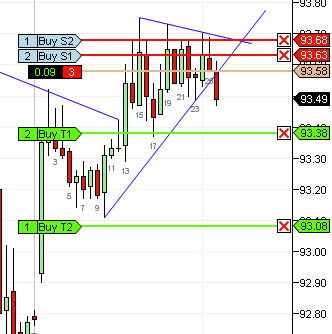
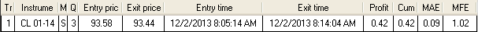

更小的止损，更大的收益
https://ninetrans.blogspot.com/2013/12/smaller-stops-larger-gains.html

在对我的交易结果进行深入调查后，我发现我最好的交易具有最小的最大不利偏移（MAE）或回撤。许多都低于5个tick。因此，我开始研究如果我非常仔细地选择交易，是否真的可以用5个tick的止损进行交易。诀窍在于找到一种方法来客观衡量如此小止损的有效性，以及如果5个tick的止损失败，更大的止损（10个tick）是否会在同一笔交易中成功。一种方法是设置两个止损，一个在5个tick，另一个在10个tick。然后衡量在5个tick止损下成功的交易比例。
三种可能的结果是：
- 两个止损都被触发：交易完全失败
- 5个tick止损出场，交易最终至少达到20个tick：交易部分成功
- 两个止损都未被触发：交易完全成功
初步结果表明，大多数在5个tick止损被止损的交易在10个tick止损下也会被止损。
目前结果是初步的，我认为我没有足够的数据在所有市场条件下得出广泛结论。
然而，我确实相信，对于成功率低于60%左右的人来说，更紧止损带来的更小损失的好处超过了因部分失败而损失的少量收益。20个tick的收益对比5个tick的止损是4倍的盈亏比，可以极大地陡峭化你的收益曲线。